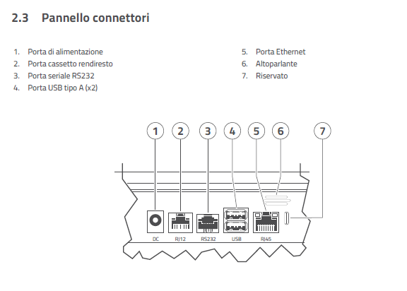

Edge N+
Il dispositivo Custom EDGE N+ è una soluzione All-in-One che integra in un unico chassis un PC POS Android e un Registratore Telematico Nativo. L'architettura è progettata per operare in mobilità (omologa ambulante) o in postazione fissa. A differenza del modello Edge N, la versione EDGE N+ si basa su una piattaforma hardware potenziata per supportare applicazioni di vendita complesse (es. KeepUp Smart) e pagamenti digitali (SoftPOS) senza latenze.

Architettura
Il sistema adotta un'architettura ibrida che unifica fisicamente ma separa logicamente il mondo gestionale da quello fiscale, garantendo stabilità e compliance normativa.
- Modulo Applicativo (Android): Gestisce l'interfaccia utente, la logica di vendita (App di cassa), la connettività verso l'esterno e i pagamenti digitali (NFC). Agisce come "Master" del sistema.
- Modulo Fiscale (RT): Una board dedicata, dotata di processore sicuro e memoria fiscale, che gestisce esclusivamente la firma dei corrispettivi, il DGFE e la comunicazione con l'Agenzia delle Entrate.
- Bus di Comunicazione: I due moduli comunicano internamente tramite una porta seriale virtualizzata ad alta velocità. Questo è fondamentale per il troubleshooting: se l'App non vede la stampante, spesso è indice di un blocco su questo canale interno.
Core System
La mainboard della versione N+ è dimensionata per gestire carichi di lavoro intensivi, come l'esecuzione simultanea del software di cassa e dei servizi in background per i pagamenti elettronici (SoftPOS).
| Componente | Specifica Tecnica EDGE N+ | Note Operative per Assistenza |
|---|---|---|
| OS | Android™ 13 | Versione con supporto GMS (Google Mobile Services). Supporta aggiornamenti OTA. |
| CPU | Hexa-Core (2x Cortex-A78 + 4x Cortex-A55) | Architettura big.LITTLE: i core A78 gestiscono i picchi (es. pagamenti), gli A55 mantengono il sistema efficiente. |
| RAM | 4 GB DDR4 | Fondamentale per evitare il kill delle App in background durante l'uso intensivo. |
| Flash | 64 GB eMMC | Lo spazio è partizionato. Verificare sempre lo spazio disponibile prima di scaricare log o backup database massivi. |
| Sicurezza | Crypto-chip Hardware | Gestisce le chiavi crittografiche per la firma XML e la sicurezza dei pagamenti Tap-to-Phone. |
Interfacce e Connettività (I/O)
Il pannello posteriore, protetto dallo sportello Cable Management, ospita le connessioni fisiche. È essenziale mappare correttamente le porte durante l'installazione per evitare conflitti.
Pannello Posteriore
- 1x Ethernet (RJ45): 10/100/1000 Mbps. Canale prioritario consigliato per la trasmissione telematica XML.
- 1x Seriale (RJ11): RS232 standard. Utilizzabile per collegare display esterni legacy o bilance checkout.
- 1x Cash Drawer (RJ12): Supporta 12V/24V (verificare selettore/impostazione software).
- 1x USB Type-C: Riservata esclusivamente per attività di Service/Debug (ADB). Non collegare periferiche di vendita qui.
- 2x USB 2.0 Type-A: Per scanner barcode, tastiere o Pen Drive (aggiornamento FW/Loghi).

Moduli Wireless
- Wi-Fi: Dual Band (2.4GHz / 5GHz) 802.11 ac.
- Data Mobile: 4G/LTE integrato (Slot Nano-SIM). Essenziale per ambulanti.
- NFC: Modulo avanzato sul fronte (cornice display) certificato per accettazione pagamenti Contactless (SoftPOS).
Sottosistema di Stampa
Il gruppo di stampa termico è integrato nello chassis. La manutenzione preventiva è carico dell'esercente o del tecnico in visita periodica.
- Formato: 57mm (Larghezza) x 50mm (Diametro rotolo).
- Velocità: 120 mm/sec.
- Head Life: 150 Km (Dato medio stimato).
- Sensori: Fine carta ottico riflessivo.
- Troubleshooting: Se il dispositivo segnala "Fine Carta" ma il rotolo è presente, pulire il sensore ottico con aria compressa o un panno morbido asciutto.
Alimentazione e Gestione Energetica
Il dispositivo EDGE N+ supporta un sistema di alimentazione ibrido che ne garantisce la piena operatività sia per installazioni Retail fisse che per scenari di mobilità avanzata, assicurando la continuità del servizio (fiscale e transazionale) anche in assenza di rete elettrica.
Specifiche Tecniche Alimentazione
L'alimentazione primaria avviene tramite adattatore AC/DC esterno. È fondamentale utilizzare esclusivamente l'alimentatore fornito in dotazione per evitare instabilità che potrebbero compromettere i cicli di scrittura sulla memoria eMMC.
- Input: 100-240V ~ 50/60Hz.
- Output: 12V DC / 1A.
- Connettore: Jack DC standard (Polo positivo centrale).
Modulo Batteria
Il dispositivo integra una batteria ricaricabile ad alta capacità, accessibile tramite vano dedicato sul fondo dello chassis.
- Tecnologia: Ioni di Litio (Li-Ion).
- Specifiche: 7.6V - 3000 mAh.
- Autonomia: L'autonomia effettiva varia in base al carico CPU (es. utilizzo intensivo app terze parti) e alla luminosità del display 8".
Procedura Critica: Prima Accensione
I dispositivi vengono spediti con una linguetta isolante applicata sui contatti della batteria per preservarne la carica durante lo stoccaggio.
- Prima di collegare l'alimentatore alla rete elettrica, aprire il vano batteria.
- Rimuovere fisicamente la linguetta isolante trasparente.
- Richiudere il vano assicurandosi che il coperchio sia bloccato.
Nota di assistenza: Se la linguetta non viene rimossa, il dispositivo si spegnerà immediatamente in caso di disconnessione accidentale dell'alimentatore, con rischio di corruzione dei dati in scrittura.
Logica di Ricarica e Manutenzione
Il sistema di ricarica è gestito dal kernel Android.
- Stato di Carica: Monitorabile dall'icona batteria nella barra di stato superiore.
- Ciclo di Vita: Le prestazioni degradano dopo circa 300-500 cicli di ricarica completi.
- Best Practice: Anche se utilizzato in postazione fissa, si consiglia di effettuare cicli di scarica/carica periodici per mantenere calibrata la lettura della percentuale residua da parte del sistema operativo.